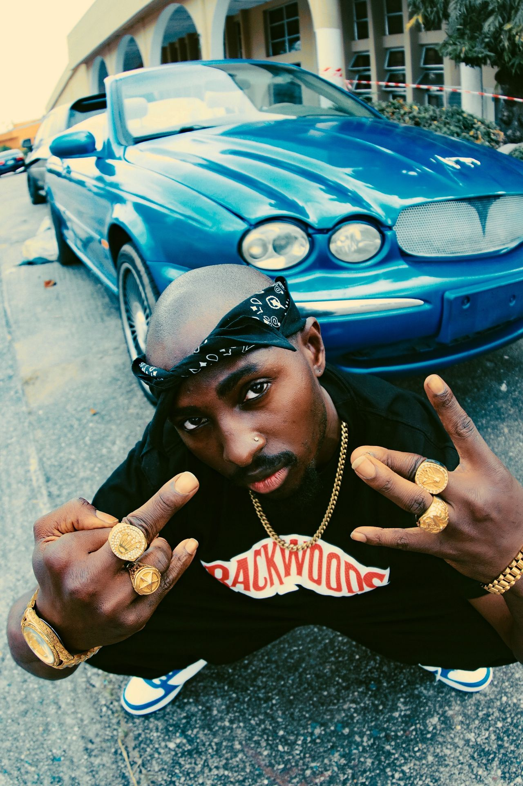
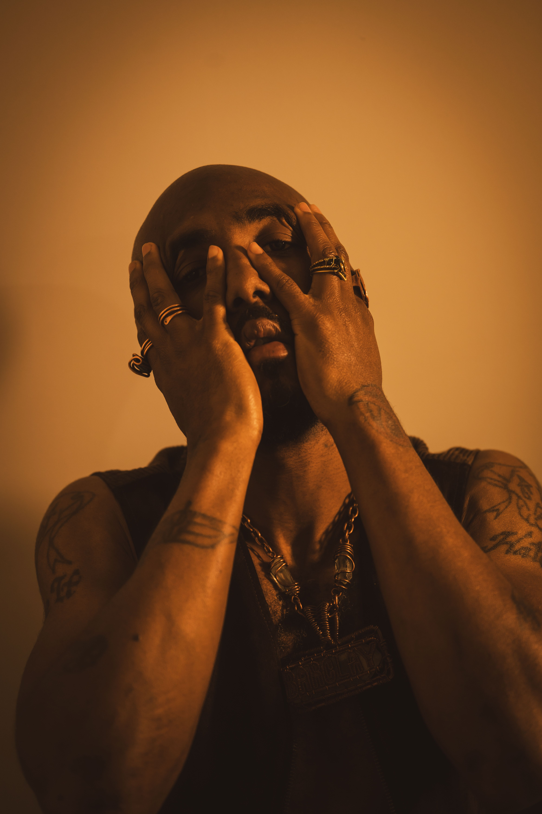

This original educational biography explores Tupac Shakur as more than a famous rapper. It follows his childhood, family background, education, friendships, poetry, acting, music, public conflicts, business decisions, death and continuing influence.
The song section does not reproduce copyrighted lyrics. Instead, it explains the themes and possible lessons behind selected songs in original language. The goal is to help readers understand why his music continues to attract discussion decades after his death.
1. Tupac's Beginning: A Childhood Surrounded by Politics and Change
Tupac Amaru Shakur was born on June 16, 1971. His birth name was Lesane Parish Crooks, although he became known as Tupac Amaru Shakur. His family history was closely connected to Black political activism in the United States.
His mother, Afeni Shakur, had been involved with the Black Panther Party. That background mattered because political questions were not abstract ideas in Tupac's family. They were connected to the lives, struggles and choices of people around him.
The name Tupac Amaru was itself connected to revolutionary history. That gave his identity a political and historical dimension from an early stage.
Tupac grew up during a period when American cities were dealing with racial inequality, poverty, police-community tensions and political conflict. Those subjects later appeared repeatedly in his writing.
The Rock & Roll Hall of Fame describes him as the son of Black Panther parents and emphasizes how his work addressed police brutality, systemic racism and inner-city realities. 1
However, reducing his childhood to politics would be incomplete. Tupac was also a young person interested in art. He read, wrote poetry and developed an interest in performance.
This combination became important later. The artist who could write about violence could also write about love. The performer who could project anger could also express vulnerability. The activist could also become an actor.
A person's background can influence their voice without completely determining their future. Tupac carried political awareness, family history and social observations into his art, but he also developed his own identity through education and creativity.
2. Education, Theatre, Ballet and Poetry
One of the most interesting parts of Tupac's story is that his development was not limited to street culture or recording studios. He received serious training in the arts.
As a teenager he attended the Baltimore School for the Arts. There he studied theatre, ballet and music.
The contrast between formal artistic education and the difficult environments he encountered in life helped create a distinctive combination in his personality.
He could understand performance from a theatrical perspective while also understanding the emotional language of hip-hop.
The Rock & Roll Hall of Fame records that he played Travis in at the Apollo Theater as a young teenager and later studied theatre, ballet and music in Baltimore. 2
This part of his biography is especially valuable for young readers. It shows that education and popular culture do not have to be enemies. A person can learn formal artistic techniques and later use them in a different cultural environment.
Tupac's poetry also became an important part of his identity. His writing demonstrated that he was interested in expressing thoughts beyond the structure of commercial songs.
Do not underestimate education simply because your final career may look unconventional. Skills learned in school can become useful in places you never expected.
3. Marin City and the Reality Around Him
When Tupac was seventeen, his family moved to Marin City, California. The change placed him in another environment and brought him closer to the Bay Area hip-hop scene.
This period was important because it exposed him to a different combination of poverty, community life, youth culture and music.
Tupac began developing connections with people involved in rap and performance. His artistic ambitions became increasingly serious.
Rather than immediately becoming a famous solo rapper, he first entered the music scene through smaller roles.
That gradual beginning is worth remembering. Successful people are often introduced to the public at the moment they become famous, but the years before recognition can contain many less visible steps.
4. Digital Underground: The Door Into Recording
Tupac became connected with Digital Underground, a Bay Area rap group known for its playful and innovative approach to hip-hop.
He initially worked around the group before becoming a performer. The Rock & Roll Hall of Fame notes that he started as a roadie and backup dancer before contributing a verse to the group's 1991 song "Same Song." 3
This was his recorded entrance into the music industry.
It is a useful reminder that careers often begin through unexpected doors. Tupac did not need to start as the centre of attention. He entered a professional environment, learned from it and eventually used the opportunity to present his own voice.
Starting small is not the same as thinking small. A supporting role can become a learning environment that prepares someone for leadership.
5. 2Pacalypse Now: The Young Social Commentator
Tupac's first solo album, 2Pacalypse Now, arrived in 1991. The project established many of the themes that would become associated with his career.
The album confronted subjects including poverty, violence, policing, young motherhood and the pressures experienced by people living in poor communities.
The Rock & Roll Hall of Fame describes the album as a powerful examination of police brutality and street realities. 4
The project also demonstrated one of Tupac's central characteristics: he wanted his music to communicate something.
That does not mean every statement in his music should be treated as a factual political argument. Some songs are deliberately emotional, provocative or dramatic. Understanding the difference between artistic expression and literal reporting is important.
6. "Brenda's Got a Baby": Poverty, Pregnancy and Responsibility
Meaning
"Brenda's Got a Baby" tells a fictionalized social story involving a young girl facing pregnancy and severe hardship. The song is less about entertainment and more about drawing attention to a vulnerable person whose circumstances have been ignored.
The emotional force comes from the contrast between childhood and adult responsibilities. Instead of treating the situation as a simple personal failure, the story encourages listeners to think about family, poverty, education, exploitation and the absence of support.
What we can learn
A community should not wait until a young person's crisis becomes visible to offer help. Prevention, education, family support and accessible social services can make a difference before a problem becomes severe.
7. Strictly 4 My N.I.G.G.A.Z.: A Wider Audience
In 1993 Tupac released Strictly 4 My N.I.G.G.A.Z.... The album moved his career forward commercially while retaining political and social themes.
It included major songs such as "Keep Ya Head Up" and "I Get Around." The album eventually became his first platinum release. 5
"Keep Ya Head Up" — Meaning
"Keep Ya Head Up" is built around encouragement. It speaks especially to women facing difficult circumstances and expresses concern about poverty, disrespect and unequal treatment.
Its central idea is perseverance: difficult circumstances do not mean a person's dignity disappears.
Lesson
Respect should not depend on someone's wealth, appearance or social position. The song encourages listeners to maintain dignity while also recognizing that society has responsibilities toward vulnerable people.
"I Get Around" — Meaning
"I Get Around" presents a very different side of Tupac. It is more playful, boastful and focused on social life and relationships.
This contrast matters. Tupac was not one-dimensional. His music could move from political commentary to humour, confidence and entertainment.
Lesson
A creative person does not have to express only one emotion or idea. A serious artist can also create entertainment.
8. Tupac the Actor
Tupac's talents were not limited to music. He developed a serious acting career during the same period in which his reputation as a rapper was growing.
His role in the 1992 film Juice showed a performer capable of portraying a troubled young man caught between ambition, friendship, violence and fear.
He later appeared in films including Poetic Justice, Above the Rim and Gridlock'd.
Acting allowed him to explore characters and situations through a different medium. It also reinforced something already visible in his music: Tupac understood storytelling.
A song can tell a story through sound. A film can tell one through character, dialogue, expression and action. Tupac used both.
Developing more than one skill can make a creative career stronger. Music opened doors for Tupac, but his education in theatre helped him build another professional identity.
9. Thug Life: Identity, Survival and Controversy
Tupac was also associated with the group Thug Life. The group's work became connected with his increasingly complicated public image.
The phrase "Thug Life" is often misunderstood when separated from Tupac's broader ideas. He used the phrase as part of a social framework that attempted to describe conditions, survival and the consequences of poverty and inequality.
At the same time, his public image increasingly involved conflict, aggression and controversy. This contradiction became a major part of his story.
Tupac could criticize violence while also participating in conflicts. He could speak about social injustice while making music that sometimes celebrated confrontation.
A responsible reading of his life therefore requires nuance. Admiring his artistic talent does not require approving every decision he made.
10. Me Against the World: Vulnerability at the Centre
Released in 1995, Me Against the World is widely regarded as one of the most important albums of Tupac's career.
The album arrived during an extremely difficult period in his life. He was facing legal problems and was later incarcerated.
The album debuted at number one on the Billboard 200, making Tupac the first artist to achieve that position while incarcerated. The project also contained some of his most personal work. 6
Rather than presenting only an aggressive public personality, the album showed fear, regret, family love, mortality and uncertainty.
"Me Against the World" — Meaning
The title expresses the feeling of standing alone against forces that appear larger than oneself. It captures isolation, pressure and the fear that personal problems may become impossible to escape.
Lesson
Feeling overwhelmed does not mean a person is permanently defeated. It can be useful to recognize the pressure honestly rather than pretending that everything is fine.
"So Many Tears" — Meaning
The song reflects mortality, sadness, pressure and the emotional cost of life in dangerous surroundings. It is one of the clearer examples of Tupac's ability to combine toughness with vulnerability.
Lesson
Strength and sadness can exist together. Someone can be publicly confident and privately afraid or hurt.
"Dear Mama" — Meaning
"Dear Mama" is a tribute to Afeni Shakur. Tupac reflects on his mother's struggles, sacrifice, imperfections and love.
The song is powerful because it does not present family relationships as perfect. It recognizes difficulty while still expressing gratitude.
GRAMMY has described the song as Tupac's dedication to his mother and former Black Panther member Afeni Shakur, and notes its enduring historical importance. 7
Lesson
Appreciation does not require pretending that a relationship was perfect. People can recognize someone's mistakes while still acknowledging their sacrifices.
11. "California Love": A Different Side of Tupac
After leaving prison and joining Death Row Records, Tupac entered a new stage of his career.
"California Love," featuring Dr. Dre, became one of his best-known songs.
Meaning
The song celebrates California's culture, nightlife, energy and regional identity. It presents the state as a place of ambition, entertainment and lifestyle.
Lesson
Celebrating where you come from can strengthen cultural identity. Regional pride can become a creative asset when it is expressed with confidence.
12. All Eyez on Me: Fame, Pressure and Excess
In 1996 Tupac released All Eyez on Me, a double album that became one of the defining projects of his career.
The project demonstrated extraordinary productivity. Tupac had a large amount of material and was working at an intense pace.
The album mixed celebration, sexuality, street narratives, loyalty, anger, ambition and reflection.
This variety reflected the contradictions in his life.
He could celebrate success while worrying about enemies. He could write about wealth while remembering poverty. He could describe violence while also expressing fear of death.
Success can solve some problems while creating others. Money and fame may increase opportunities, but they can also increase attention, expectations and pressure.
13. "Changes": Social Problems That Outlived His Era
Meaning
"Changes" is one of Tupac's most recognized socially conscious songs. It examines racism, poverty, policing, inequality and the desire for a better future.
The song became especially relevant again decades after Tupac's death. The Rock & Roll Hall of Fame notes that it returned to major public attention during the 2020 protests following the murder of George Floyd. 8
Lesson
Social problems can survive across generations when their underlying causes are not addressed. Awareness is important, but lasting change requires education, fair institutions, responsible leadership, community participation and practical action.
14. "Hail Mary": Spiritual Questions and Mortality
Meaning
"Hail Mary" explores darkness, danger, spirituality, survival and death. The religious imagery gives the song a serious atmosphere and shows another dimension of Tupac's writing.
The song can be interpreted as an artist wrestling with the possibility of death while also thinking about faith and personal destiny.
Lesson
People facing uncertainty often ask questions larger than themselves. Reflection on mortality can encourage people to think about how they use the limited time available to them.
15. "To Live and Die in L.A.": Love and Contradiction
Meaning
The song presents Los Angeles as both attractive and dangerous. It captures the excitement of the city while acknowledging the risks and contradictions surrounding it.
This is a recurring feature of Tupac's work: he could love a place while criticizing aspects of the environment around him.
Lesson
Loving your community does not mean ignoring its problems. Constructive criticism can come from people who genuinely care about a place.
16. "I Ain't Mad at Cha": Friendship and Change
Meaning
The song deals with friendship, personal growth and the way people can move in different directions as they become older.
It recognizes a difficult truth: not every friendship remains the same forever.
Lesson
People change. A healthy response to change is not always resentment. Sometimes respect means accepting that another person's path has become different from yours.
17. The Human Side of Tupac's Music
One reason Tupac remains influential is that his catalogue contains multiple emotional voices.
There is the angry voice confronting injustice. There is the romantic voice discussing relationships. There is the son speaking about his mother. There is the young man thinking about death. There is the performer celebrating success. There is the poet trying to understand his surroundings.
These voices sometimes contradict one another. That contradiction is part of the reason his work remains interesting.
A responsible educational approach should not turn Tupac into either a perfect hero or a complete villain.
He was a complicated person whose decisions had consequences. His artistic achievements can be studied while his mistakes are also examined.
18. Friends, Collaborators and Conflicts
Tupac's career developed through relationships with many artists, producers, actors and people from different parts of the entertainment industry.
Digital Underground provided one of his first major opportunities. Later, collaborations with artists such as Dr. Dre, Snoop Dogg, Outlawz and others became part of his musical history.
His relationships also included serious conflicts. The East Coast and West Coast rivalry of the 1990s became closely associated with Tupac, Death Row Records and other major figures in hip-hop.
The rivalry became more than a musical disagreement. It affected relationships, media narratives and personal security.
The conflict surrounding Tupac and The Notorious B.I.G. became one of the most famous and tragic stories in hip-hop history.
It is important not to romanticize that period. Competition can create creative energy, but when competition becomes personal hostility, the consequences can be severe.
Pride and public pressure can turn disagreements into much larger problems. Walking away from unnecessary conflict can sometimes be a greater sign of strength than winning an argument.
19. The Final Days
Tupac's life ended in September 1996 at the age of twenty-five.
On September 7, 1996, he attended a Mike Tyson boxing match in Las Vegas. Later that night, he was travelling in a vehicle when a car pulled alongside and gunfire was directed at the vehicle.
Tupac was seriously wounded. He was taken to hospital and died on September 13, 1996.
The circumstances of his death became one of the most discussed unsolved tragedies in popular music for many years.
The Rock & Roll Hall of Fame records his life dates as June 16, 1971 to September 13, 1996. 9
His death froze his public image at twenty-five. Unlike artists who continue to age publicly, Tupac became permanently associated with the young man he was at the time of his death.
Many stories and theories about Tupac's death have circulated for decades. A responsible biography should distinguish documented facts from speculation rather than presenting every theory as established truth.
20. Music Released After His Death
Tupac had recorded a large amount of material before his death. Consequently, new projects continued to appear after 1996.
One of the most notable posthumous releases was The Don Killuminati: The 7 Day Theory, released under the Makaveli name.
The album included "Hail Mary" and "To Live and Die in L.A.". It became another important part of his musical legacy. 10
Other posthumous albums and compilations continued to introduce his previously recorded work to new listeners.
This created a complicated question about artistic legacy: when an artist dies, how should previously recorded material be presented?
The continuing releases helped keep Tupac's voice available to new generations, but they also meant that listeners were sometimes hearing material he had not personally arranged for release after his death.
21. Tupac the Poet
Tupac's poetry deserves attention because it demonstrates that his creative identity was larger than rap.
His posthumously published poetry collection The Rose That Grew From Concrete helped reveal another side of his writing.
The metaphor of a rose growing through concrete captures one of the central ideas associated with his work: beauty and ambition can emerge from difficult surroundings.
That idea also helps explain why young people continue to identify with his story.
He represented the possibility of creating something meaningful while surrounded by circumstances that seemed designed to limit a person's future.
22. What We Can Learn From Tupac's Music
Lesson One: Tell the truth about difficult subjects
Tupac did not avoid subjects such as poverty, racism, violence, incarceration and family hardship. His approach demonstrates that creative work can create conversations about subjects people may otherwise avoid.
Lesson Two: Vulnerability is not weakness
Songs such as "Dear Mama" and "So Many Tears" demonstrate that an artist can acknowledge fear, love and pain while still presenting strength.
Lesson Three: Education can strengthen creativity
His experience at the Baltimore School for the Arts shows how theatre, music and formal training contributed to a broader artistic identity.
Lesson Four: Your background can become your voice
Tupac's political and family history influenced his perspective. Instead of completely hiding his background, he transformed parts of it into creative material.
Lesson Five: Success requires responsibility
Tupac's life also provides lessons about what can happen when fame, anger, conflict and public pressure become intertwined.
Studying his mistakes is just as valuable as studying his achievements.
Lesson Six: People are complicated
A person can be generous in one situation and reckless in another. An artist can create inspiring music while making poor personal decisions.
Understanding this complexity helps us avoid turning celebrities into perfect heroes.
Lesson Seven: Creative work can outlive its creator
Tupac died young, but his music continued reaching people who were not even alive when he recorded some of his songs.
This demonstrates the long-term power of ideas expressed through art.
Lesson Eight: Social criticism should lead toward constructive thinking
Tupac frequently described problems. Modern listeners can take the next step by asking what practical solutions might address those problems.
23. Selected Tupac Music: Meaning and Educational Interpretation
Tupac recorded a large catalogue across studio albums, group projects, soundtracks, singles and posthumous releases. Rather than reproducing copyrighted lyrics, the following guide summarizes the central themes of selected important songs in original language.
Brenda's Got a Baby
Theme: social neglect, teenage pregnancy and poverty. The song encourages listeners to look beyond individual blame and consider the environment surrounding vulnerable young people.
Keep Ya Head Up
Theme: dignity, perseverance and respect. It encourages people facing hardship to maintain hope and dignity.
Dear Mama
Theme: gratitude, motherhood, poverty and forgiveness. It shows that family relationships can contain both pain and love.
So Many Tears
Theme: mortality, fear and emotional pressure. It shows the human being behind the public image.
Me Against the World
Theme: isolation and survival. It captures the feeling of facing overwhelming circumstances.
California Love
Theme: regional identity and celebration. It presents California as a cultural environment full of energy, ambition and contradiction.
Changes
Theme: social inequality and the desire for improvement. It encourages listeners to think about systemic problems rather than only individual behavior.
Hail Mary
Theme: spirituality, danger and mortality. It explores the darker questions surrounding survival and death.
To Live and Die in L.A.
Theme: love for a place mixed with awareness of its dangers. It demonstrates that affection and criticism can exist together.
I Ain't Mad at Cha
Theme: changing friendships and personal development. It recognizes that people sometimes grow in different directions.
Until the End of Time
Theme: mortality, reflection and the uncertainty of the future. It reflects on the idea that life is temporary and relationships can change.
Hit 'Em Up
Theme: rivalry, anger and confrontation. This song is important historically because it demonstrates how personal conflict became part of 1990s hip-hop.
The educational lesson is not to copy the hostility. Instead, it shows how public conflict can become amplified when entertainment, competition and personal disputes overlap.
24. Tupac's Career Timeline
Tupac Shakur is born on June 16.
He develops interests in poetry, theatre, music and performance.
He studies theatre, ballet and music at the Baltimore School for the Arts.
He appears with Digital Underground and releases his debut solo album, 2Pacalypse Now.
Strictly 4 My N.I.G.G.A.Z... expands his audience and includes major songs such as "Keep Ya Head Up."
Me Against the World becomes a major commercial and artistic success.
All Eyez on Me is released and becomes one of his defining projects.
Tupac is fatally wounded in Las Vegas and dies on September 13 at twenty-five.
Previously recorded music, poetry and archival material continue to reach new audiences.
Tupac is inducted into the Rock & Roll Hall of Fame. 11
25. Why Tupac's Legacy Continues
Tupac's influence extends beyond the number of records sold or awards received.
He helped demonstrate that mainstream hip-hop could contain political discussion, personal confession, storytelling, poetry, social criticism and commercial entertainment at the same time.
The Rock & Roll Hall of Fame identifies his influence on later artists including Kendrick Lamar, Nas, J. Cole, Eminem, Drake and others. 12
His influence is also visible in the way artists discuss social problems through music.
Tupac's legacy is therefore not only about imitation. It is also about permission: permission for rappers to discuss politics, family, vulnerability, poverty, ambition and mortality in the same artistic career.
Tupac's life reminds us that a person's circumstances can influence their story without completely controlling the ending. Education, writing, music and performance allowed him to turn experiences into creative work that continued after his death.
26. Remembering Tupac Without Romanticizing His Mistakes
It is possible to appreciate Tupac's talent while remaining honest about the difficult parts of his biography.
He was involved in legal disputes, public conflicts and decisions that created serious consequences. His association with violent imagery and confrontational music also contributed to the complicated public image surrounding him.
A useful educational biography should not hide these details.
At the same time, reducing him entirely to controversy would also miss the artist who wrote about his mother, poverty, racism, fear, hope, friendship and social change.
The most valuable approach is to study the whole person.
Admiration should not require blindness. We can learn from someone's talent while also learning from their mistakes.
27. Conclusion: A Short Life With a Long Conversation
Tupac Shakur lived only twenty-five years, but those years contained more artistic and cultural change than many people experience over much longer careers.
He moved through theatre, poetry, music and film. He became a commercially successful rapper while continuing to discuss social issues. He experienced fame, conflict, imprisonment, personal pressure and enormous public attention.
His music continues to be discussed because it asks questions that have not disappeared.
What happens to young people growing up in poverty? How should society respond to inequality? How can families survive hardship? How should people deal with friendship and betrayal? What does success mean? How should a person respond to fear? Can art create social change?
There are no single answers to those questions, but Tupac repeatedly used his art to ask them.
That may be one of the strongest reasons his work remains relevant. He did not present life as simple.
His story contains achievement and failure, tenderness and anger, education and street experience, ambition and fear.
For today's reader, perhaps the most useful lesson is not to copy Tupac's lifestyle or every decision he made. It is to recognize the power of developing a voice, learning continuously, telling meaningful stories and using creativity to examine the world.
His life ended in 1996, but the conversation created by his work did not end with him.
Educational Note
This page is intended for educational and cultural discussion. Song titles and album titles are mentioned for identification and analysis. No copyrighted song lyrics are reproduced here.
The explanations of song meanings are original interpretations written for this article. Different listeners may interpret individual songs differently depending on their experiences and understanding.
Sources and Further Reading
Rock & Roll Hall of Fame — Tupac Shakur: The Hall of Fame biography provides information about his family background, education, Digital Underground period, albums, influence and legacy.
GRAMMY: Background material on Tupac's music, Me Against the World, "Dear Mama" and his continuing importance in hip-hop history.
Rock & Roll Hall of Fame archives: Archival information concerning Tupac's handwritten lyrics and recording history.
For readers interested in deeper research, consult authoritative biographies and institutional archives rather than relying on unverified social-media claims about his life or death.
Images of Tupac Shakur

